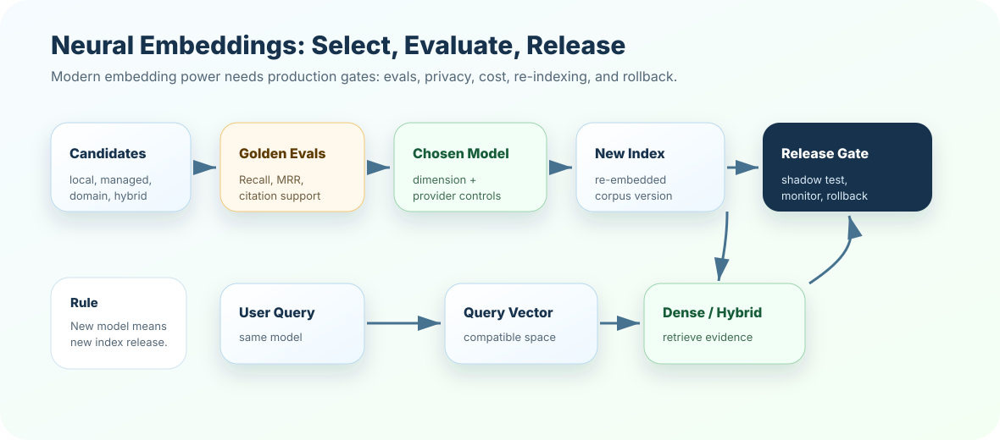

Neural embeddings are the modern workhorse of semantic retrieval. They are powerful because they learn meaning from large training data, but production teams still need disciplined model selection, privacy review, re-indexing plans, and retrieval evals.
How to read this chapter
Think model selection, not model worship: the best embedding model is the one that retrieves your evidence reliably under your constraints.
Separate capability from operations: accuracy is only one dimension. Cost, latency, privacy, dimensions, and re-indexing also decide architecture.
Use evals: never choose embeddings from vibes. Use golden queries, expected chunks, and failure labels.
Plan migration: changing embedding models means re-embedding documents and releasing a new index safely.
A neural embedding model can understand "rotate key" and "regenerate credential" as related. That power is useful, expensive, and operationally serious.
Core ideaNeural embeddings are vectors produced by trained neural models. They capture semantic relationships better than simple lexical methods, but they still need governance, evals, and versioned indexes.
Sub-topic 1 of 14
Why Neural Embeddings Matter
At a glance
They handle paraphrase better than TF-IDF.
They support semantic search across messy user language.
They can improve RAG recall when terms do not match exactly.
They introduce model, cost, privacy, and re-indexing decisions.
Chapter 13 showed local lexical retrieval. It is transparent and useful, but it can miss meaning when users use different words. Neural embeddings help with that gap. They learn from language patterns, so related concepts can be close even without exact token overlap.
Neural embedding north starChoose the embedding model that retrieves the right evidence for your product, not the one that sounds most impressive.
Include paraphrase, exact IDs, stale content, access-controlled data, and edge cases.
03
Compare candidates
Test local, neural, and hybrid retrieval with the same eval set.
04
Release with versioning
Store model, dimension, index version, corpus version, and rollback plan.
Sub-topic 2 of 14
Real-Life Analogy: A Skilled Translator
Imagine two people describe the same thing differently. One says "terminate employee access." Another says "remove the user's permissions." A skilled translator understands they are close ideas.
Neural embeddings act like that translator for retrieval. They help the system recognize similar meanings across different wording. But a translator can still misunderstand domain rules, miss a rare code, or use the wrong context. That is why we still evaluate.
Mental picture
TF-IDF listens for word overlap.
Neural embeddings listen for learned meaning.
Hybrid retrieval listens for both.
Evaluation decides which behavior is reliable.
Sub-topic 3 of 14
How Neural Embeddings Work
A neural embedding model takes text and returns a fixed-length vector. The model has learned from large datasets how to place related meanings near each other.
Input
Question, chunk, title, paragraph, support ticket, product description, code comment, or multimodal text representation.
Model
A trained neural network that produces a vector representation. It may be open-source, hosted by a provider, or deployed inside your own environment.
Output
A dense vector with a fixed dimension. The same model family must be used consistently for indexed chunks and runtime queries.
Mentor note: neural embeddings are stronger for meaning, but they are not source-of-truth systems. They retrieve candidates.
Sub-topic 4 of 14
Provider and Model Choices
Common choices include local open-source models, managed API embeddings, and provider-specific models from AI platforms. The right choice depends on your constraints.
Local
Open-source models
Good for privacy, offline demos, cost control, and customization. You own more operations.
Managed API
Hosted embeddings
Good for speed to production, strong quality, and lower infra burden. You must review privacy, cost, and rate limits.
Domain
Specialized models
Useful for legal, medical, code, support, or multilingual corpora when general models miss domain meaning.
Hybrid
Dense plus sparse
Often strongest when paraphrase and exact terms both matter.
Sub-topic 5 of 14
Dimensions and Vector Stores
Every embedding model outputs vectors with a fixed number of dimensions. Your vector store collection is usually created for one dimension size. If the model changes and dimensions change, the collection must change too.
Dimension compatibility
model A -> 384 dimensions
model B -> 768 dimensions
model C -> 1536 dimensions
Do not mix them in the same vector collection unless the system explicitly supports it.
Usually: new model = new vectors = new index release.
Engineering checks
Store embedding model name or id.
Store vector dimension.
Store embedding version and index version.
Block writes if vector dimension does not match collection config.
Run evals before switching production traffic.
Sub-topic 6 of 14
Selection Framework
Choose embedding models with a decision framework, not intuition alone.
Cost: corpus embedding cost, query embedding cost, re-indexing cost.
Governance: privacy, data residency, auditability, provider approval.
Migration: rebuild time, rollback strategy, index versioning, compatibility.
Sub-topic 7 of 14
Architecture View

Neural embedding adoption should pass through evaluation and release gates before production traffic depends on it.
Neural embedding release flow
candidate models
-> embed evaluation corpus
-> run golden queries
-> compare retrieval metrics
-> choose model + dimension
-> build new index version
-> shadow test
-> release or rollback
Sub-topic 8 of 14
Evaluation Plan
Good embedding evaluation uses real retrieval cases. A leaderboard score is not enough because your corpus has its own language and failure modes.
Golden queries
Questions with expected evidence chunks. Include happy paths and edge cases.
Citation support, groundedness, completeness, contradiction rate, and reviewer severity.
Eval split
exact-term queries -> IDs, error codes, policy numbers
paraphrase queries -> different wording, same meaning
domain queries -> product vocabulary, internal terms
multilingual queries -> if product supports multiple languages
risk queries -> stale, restricted, safety-sensitive content
Sub-topic 9 of 14
Re-Indexing and Migration
Changing embedding models is not a small config tweak. It changes the vector space. A safe migration treats the new embedding model as a new index release.
Prepare
Version everything
Model, dimension, chunker, metadata schema, corpus version, and index id.
Build
Create a parallel index
Do not overwrite the existing production index until the new one passes evals.
Compare
Run shadow queries
Compare old and new retrieval on golden queries and sampled real queries.
Release
Gate and roll back
Ship gradually, monitor failures, and keep the old index available.
Sub-topic 10 of 14
Production Considerations
Production gear
Batch embedding: large corpora need resumable jobs, retries, and checkpointing.
Rate limits: query-time embedding calls can throttle user traffic.
Latency: cache frequent query embeddings where appropriate.
Privacy: sensitive corpora may require local models or approved hosted environments.
Cost controls: estimate corpus rebuilds and query volume before choosing providers.
Monitoring: track embedding failures, dimension mismatch, retrieval misses, and drift.
Fallback: keep sparse/local retrieval as fallback for provider outage or exact-term needs.
Sub-topic 11 of 14
Common Mistakes
M01
Choosing by popularity
Symptom: a famous model performs poorly on your corpus.
Better move: run corpus-specific retrieval evals.
M02
Mixing vector spaces
Symptom: query and document vectors come from different models.
Better move: enforce model and dimension compatibility.
M03
No re-indexing plan
Symptom: model upgrade breaks retrieval with no rollback.
Better move: build parallel index versions and release gradually.
M04
Ignoring exact terms
Symptom: dense retrieval misses error codes or IDs.
Better move: use hybrid retrieval with sparse signals.
M05
Skipping privacy review
Symptom: sensitive text is sent to an unapproved provider.
Better move: classify data and choose approved local or hosted options.
M06
Evaluating only top-1
Symptom: good evidence appears at rank 5 but never reaches context.
Better move: track Recall@k, MRR, reranking, and context assembly.
M07
Ignoring cost of rebuilds
Symptom: every model experiment becomes expensive and slow.
Better move: sample first, estimate full rebuild cost, then scale.
M08
No failure labels
Symptom: teams know model A is "worse" but not why.
Better move: label misses as paraphrase, exact-term, stale, domain, language, or access failures.
Sub-topic 12 of 14
Interview-Level Understanding
A strong answer sounds like this: "Neural embeddings are dense vectors produced by trained models. They are usually stronger than lexical methods for paraphrase and semantic retrieval, but model choice must be validated on the target corpus. In production, I version the model and dimension, rebuild indexes on model changes, evaluate Recall@k and citation support, and often combine dense retrieval with sparse search."
Senior signal
What impresses in real architecture reviews?
Do not only say which provider you like. Explain the eval set, expected failures, migration plan, privacy posture, cost estimate, and rollback path.
Sub-topic 13 of 14
Mini Assignment
Design an embedding model selection experiment for a support knowledge base. Include three candidate approaches, ten golden queries, expected evidence chunks, metrics, cost considerations, privacy concerns, and a migration plan.
Sub-topic 14 of 14
Points To Remember
Neural embeddings are strong for semantic and paraphrase retrieval.
They do not remove the need for metadata, citations, filters, or evals.
Model changes usually require a new vector index release.
Choose models with corpus-specific golden queries, not popularity alone.
Production teams plan cost, latency, privacy, fallback, monitoring, and rollback.
Next, test embedding-model judgment in the quiz, then build a model-selection scorecard in exercises and project.